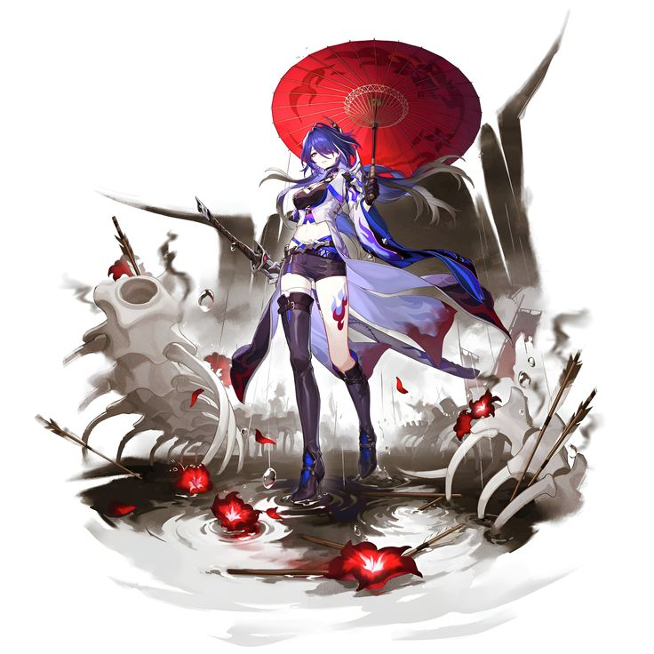
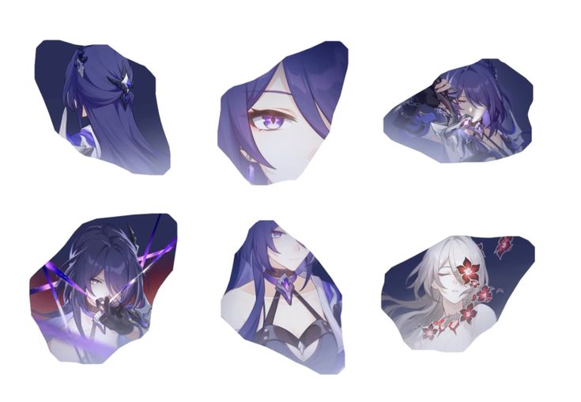
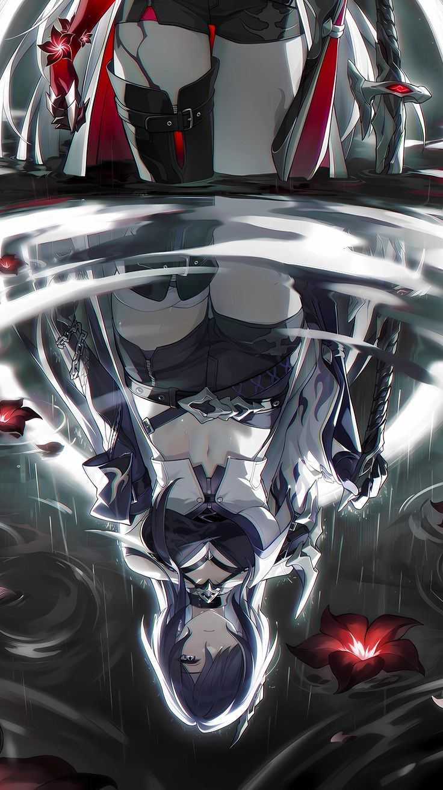
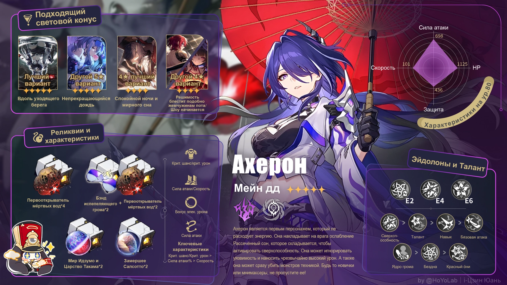
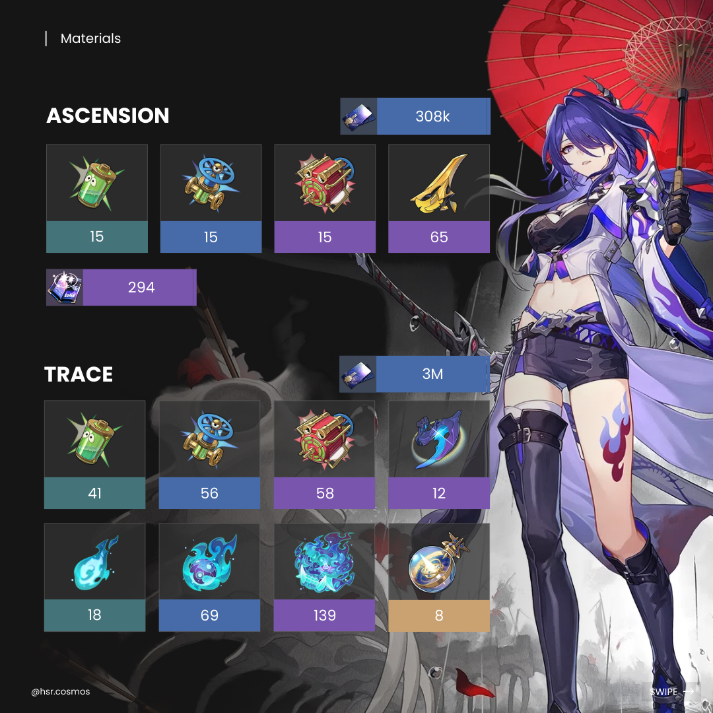
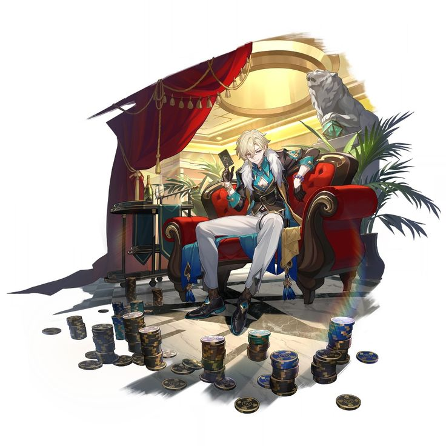
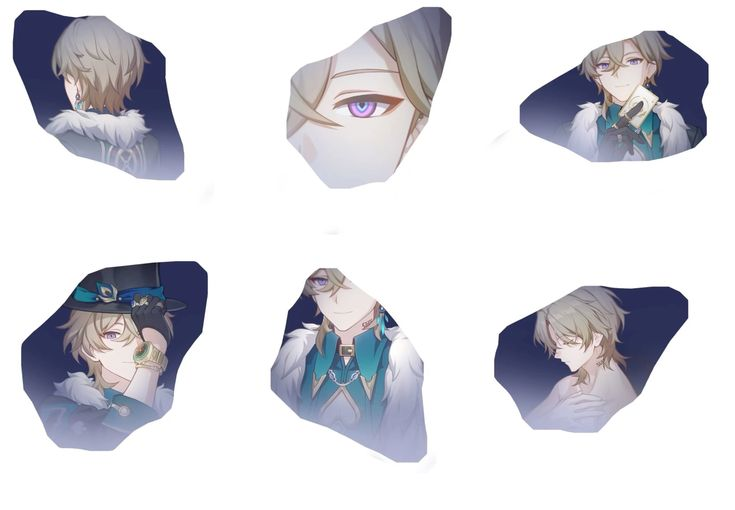
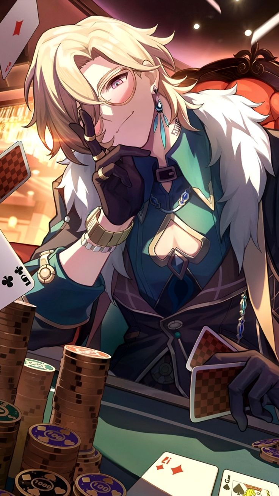
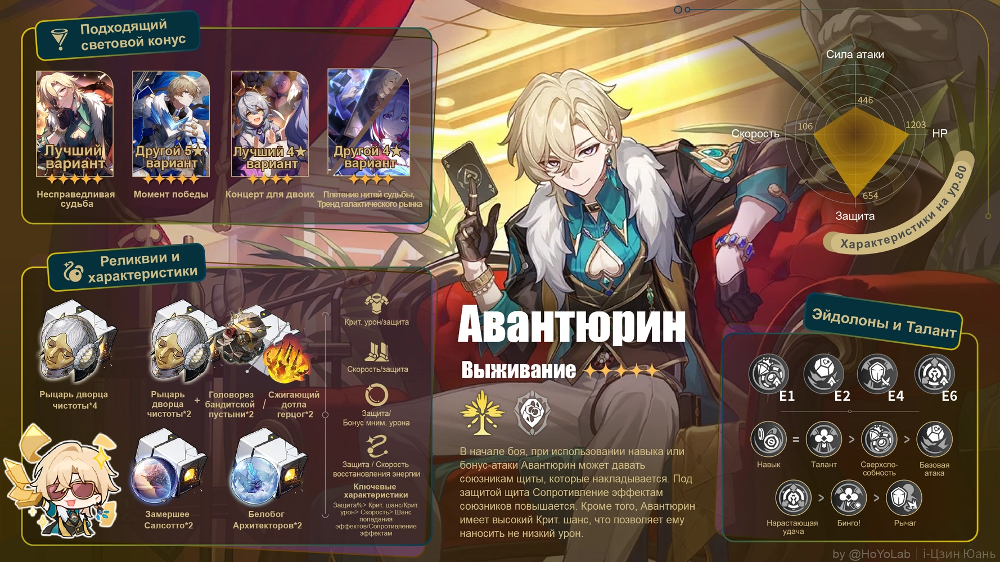
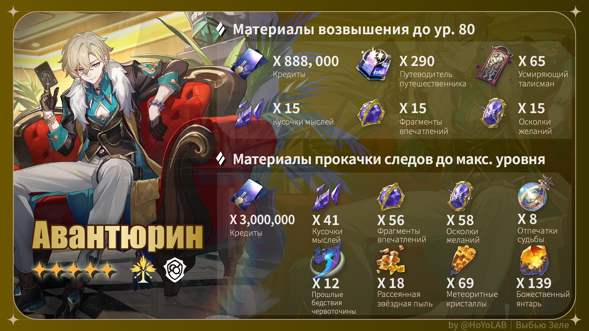

«Люди, блуждающие по космосу, стремятся к двум вещам:
обнаружить следы прошлого и проложить свой собственный путь.
Однако под их пристальным взглядом...
обычно все останавливаются на первом»
Ахерон — игровой персонаж в Honkai Star Rail.
Является членом фракции Самоуничтожителей.
Путь Небытие
Тип урона Электрический
эйдолоны, рекомендуется выбивать 2 эйдолон
Конус
Какова роль и мощность Ахерона?
Ахерон (Электрический, Небытие) является мейн дд,
который может истощать стойкость, игнорируя уязвимость врага.
Она может наносить очень высокий урон.
Ахерон является первым персонажем, не использующим механику энергии.
Она активирует сверхспособность путем наложения на врага ослабление Рассечённый сон,
чтобы наносить чрезвычайно высокий дамаг.
Ахерон должна использоваться вместе с союзником пути Небытия, но требование на него не высоко.
Используя Технику, она может сразу убить обычных врагов без входа в битву, что превращает TBS в RPG~
Что касается уровня мощности, она находится на уровне T0, поэтому вы должны не пропустить ее!
Гайд по сборке
 Ресурсы необходимые для возвышения
Трейлер Ахерон
Можешь использовать меня по своему усмотрению, даже предать в подходящий момент.
Использование и предательство — это всего лишь способы обмена.
Но я не веду дела в убыток и надеюсь,
ты... не разочаруешь меня
Авантюрин (Мнимый, Сохранение)
обеспечивает союзников щитами посредством использования навыка и бонус-атаки.
Эйдолоны 
Конус 
Авантюрин обладает способностью повышать своё сопротивление эффектам, используя щиты.
Когда он получает удар от врага или использует бонус-атаку,
он накапливает заряды Ставки вслепую.
После накопления 7 зарядов он проводит бонус-атаку.
Его уникальный щит, Укреплённая ставка, позволяет игнорировать эффекты контроля
и даёт дополнительный заряд при получении урона,
поэтому его лучше размещать на второй или третьей позиции
, чтобы он чаще подвергался атакам.
Кроме того, Авантюрин способен ослаблять врагов своей сверхспособностью,
что повышает наносимый критический урон.
Он также может накладывать щиты на союзников,
что делает его отличным персонажем для выживания.
Гайд по сборке
Ресурсы необходимые для возвышения
Трейлер